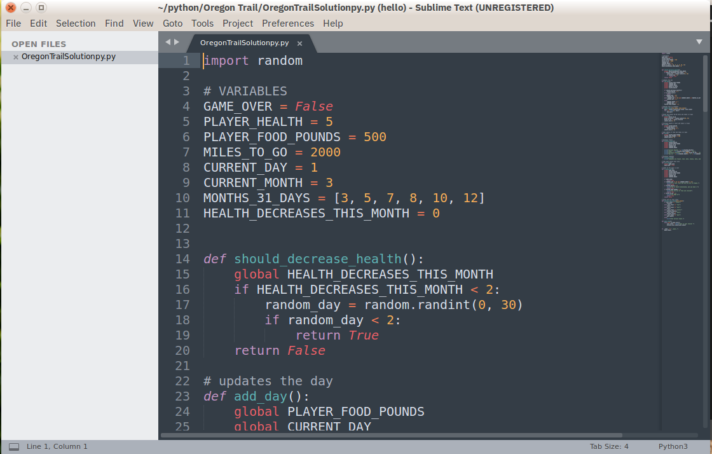

Introduction
Automation is one of the most powerful uses of Python. Instead of doing repetitive tasks manually, you can write simple scripts that handle everything for you. This saves time, reduces errors, and increases productivity.
Why Use Python for Automation?
Python is easy to learn, has simple syntax, and offers a huge collection of libraries that make automation tasks straightforward. From file handling to web scraping, Python can do it all.

What I Learned
While learning automation, I also explored Machine Learning and got hands-on experience with Python-based ML/AI libraries. This helped me understand how automation and intelligent systems can work together.
- Basic Python scripting for automation
- Working with files and folders
- Using libraries like NumPy and Pandas
- Introduction to Machine Learning concepts
- Exploring AI/ML tools and workflows
Popular Automation Libraries
Python provides powerful libraries that make automation simple and efficient:
- os – for file and directory operations
- shutil – for file management
- requests – for working with APIs
- BeautifulSoup – for web scraping
- selenium – for browser automation

Real-World Use Cases
Automation can be used in many real-life scenarios:
- Renaming hundreds of files instantly
- Scraping data from websites
- Automating emails and reports
- Managing data and generating insights
"Automate the boring stuff, and focus on what truly matters."
Conclusion
Python automation is a game-changer. Combined with Machine Learning knowledge, it opens doors to smarter and more efficient systems. Whether you're a beginner or an experienced developer, automation is a must-have skill.
← Back to Blogs